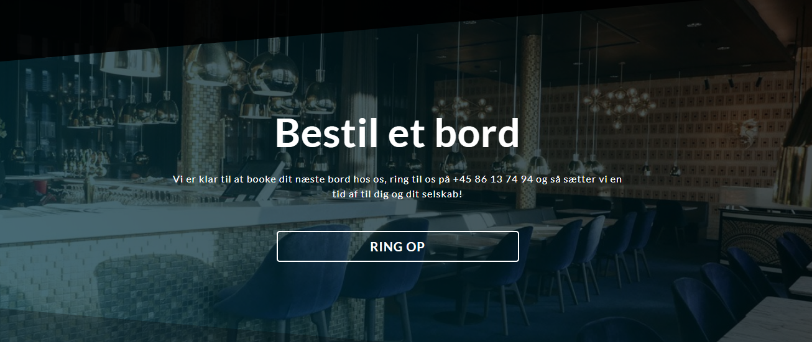
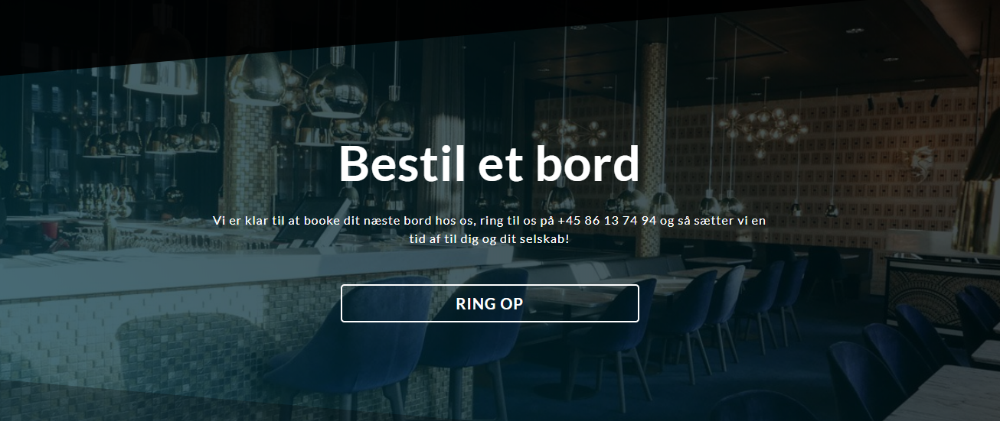

Case 3 - Responsiv Hjemmeside, Café Stiften.
i Case 3 var opgaven, at finde en kunde i Århus, som ikke havde en responsiv hjemmeside, og derefter selv lave et forslag til hvordan siden kunne se ud. min gruppe og jeg valgte Café Stiften som kunde, en lille hyggelig café ved siden af banegården. projektet blev en succes, og jeg vil her vise nogle ting fra den. Dog vil jeg her lige linke til den originale side, så i har noget at sammenligne med. cafe stiften original

 
